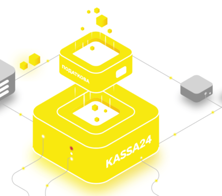
Благодаря изменению законодательства и появлению программных
регистраторов рассчетных операций бизнесу больше не нужно
покупать дорогие фискальные регистраторы, которые не только
стоят больше обычного комьютера но и требую заключения
договора об обслуживании с ежемесячной оплатой. Теперь
фискализация это процесс, который происходит на сервере
налоговой через Интернет и не требует дополнительного
дорогостоящего оборудования.
Это основная функия ПО Kassa24, которую чаще всего используют
кассиры. Мы постарались максимально упростить процесс
добавления товаров в заказ и подтверждения сделки. Таким
образом программа будет удобной для различных сфер бизнеса,
будь это продажа товаров, ювелирных изделий, предоставление
услуг или выездная торговля.
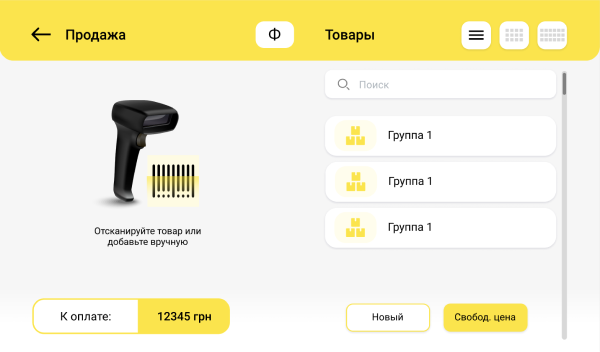
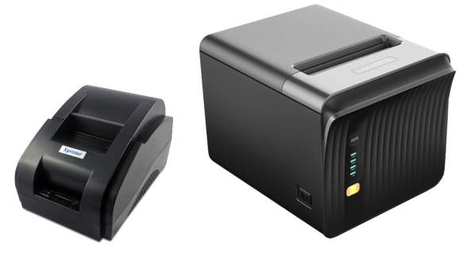
Несмотря на обыденность этого документа для
среднестатистического покупателя, не все програмнные РРО умеют
это делать. Например, бесплатный фискальный регистратор от
налоговой может отправить только ссылку на почту или мобильный
номер клиента. Но если он попросит бумажный чек - кассиру
просто придется развести руками.
На Терминалах Kassa24 эта функция реализована благодаря
внешним принтерам чеков шириной кассовой ленты 58 или 80 мм.
Подключение возможно по Bluetooth каналу -для тех, кто не
любит мого проводов, а также по USB кабелю - для тех, кто
предпочитает надежность.
Также в линейке наших POS терминалов есть модели со встроенным
принтером чеков.
Время не стоит на месте, и требования законодательства, и
экологические мотивы предполагают возможность отправки
электронного чека по просьбе покупателя.
Kassa24.Online может отправлять информацию о заказе вашего
клиента как на его email, так и мобильный номер.
Кассиру достаточно поставить отметку в поле "электронный чек"
при оформлении заказ и указать его номер или адрес почты.
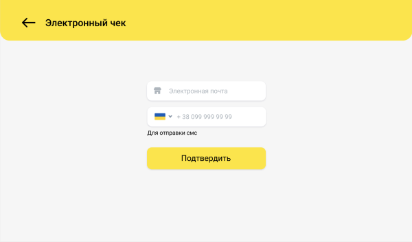
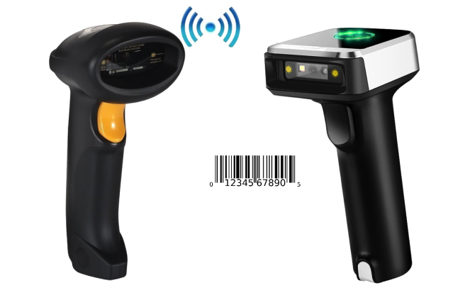
Не секрет, что на большенстве товаров, которые мы покупаем в
магазинах, уже есть штрих-код, который предусмотрен
производителем.
Именно его используют для автоматизации торговли. Кассир
сканирует его при помощи специального сканера, Терминал
получает зашифрованый цифровой код, сравнивает его с
внутренней базой данных и понимает, какой именно товар хочет
купить ваш клиент.
Все это происходит за считанные секунды и позволяет
значительно ускорить обслуживание клиентов.
Но нюанс заключается в том, что для считывания штрих-кодов
нужно использовать специальное оборудование. В бесплатном РРО
от налоговой для этого используют камеру самого смартфона,
которая фотографирует его, а потом обрабатывает программно,
пытаясь найти там штрих-код. Все это очень затягивается во
времени и заставляет клиентов ждать.
Мы пошли другим путем, и во время разработки нашего
программного РРО подобрали несколько моделей высокоточных и
недорогих считывателей штрих-кодов, которые можно подключить
по USB или Bluetooth каналу. Это позволит обслуживать ваших
клиентов "со скоростью супермаркета"!
Хоть и штрих-коды присутствуют на многоих заводских товарах,
но все же не на всех. Кроме того, некоторые бизнесы сами
фасуют свою продукцию в удобном для клиента формате или
продают товары hand made.
Именно для них мы разработали дополнительный модуль "Печать
этикеток", который также доступен в Kassa24.Online.
Для печати бирок со штрих-кодом вы можете использовать один из
проверенных и синхронизированных принтеров, подключив его по
USB или через Bluetooth соединение.
Макеты самих этикеток уже есть в базе, поэтому вам не придется
часами "играться" с настройками полей и шрифтов.
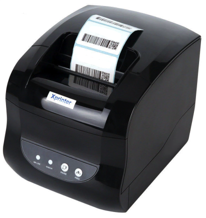
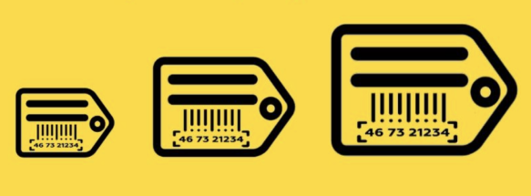
Для этой функции подойдет тот-же принтер этикеток и набор
стандартных макетов.
Единственное отличие заключается в том, что сканер может
считать штрих-код и с самой маленькой этикетки размером 30*20
мм, а вот клиенту будет удобней шрифт побольше.
Поэтому вы сможете выбрать другой макет, чтобы разместить
ценники на полке с товарами.
Для продажи весовых товаров интеграция с цифровыми товарами
просто необходима. Вашему кассиру больше не нужно в ручном
режиме считать стоимость товара или вводить вес в программу.
Благодаря приложению "Весовые товары" информация о весе будет
автоматически появлятся в окне продаж, а программа Касса24
будет сама пересчитывать общую стоимость
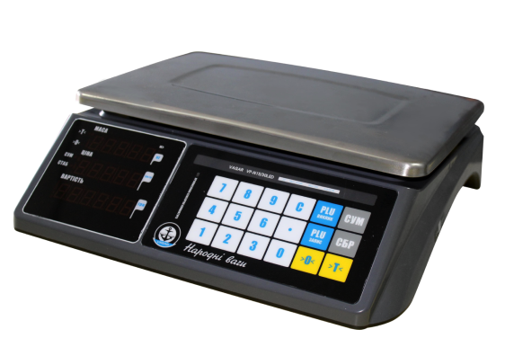
Создание клиентских баз и внедрение всевозможных программ
лояльности становятся современным трендом в мире ритейла.
Предлагая накопительную систему скидок вы говорите своим
клиентам: "Чем дольше вы с нами, тем больше ваша скидка".
Таким образом у них появляется лояльность к вашему магазину и
в случае необходимости приобретения конкретного товара, они,
скорее всего, обратяться именно к вам.
С технической точки зрения хранение информации о ваших
клиентах и сумме их покупок хранится на сервере. Вы же можете
добавлять новых клиентов через web-кабинет либо на самом
терминале. Также вы сможете задавать размеры скидок в
зависимости от суммы предыдущих покупок.
Если вы хотите знать, что у вас происходит на складе, товарный
учет следует начинать именно с цифровизации процесса приемки
товаров.
При первой или очередно поставке ваш кассир или кладовщик
должен сосканировать штрих-коды всех товаров в парти. Далее
система будет отнимать проданные товары от количества на
складе.
Таким образом можно всегда посмотреть остатки по той или инной
позиции.
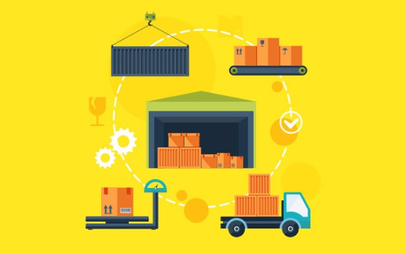
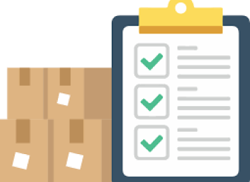
Для сопоставления реальных и номинальных остатков по складу (а
также проверки ваших кассиров) мы рекомендуем время от времени
проводить инвентаризации.
Процесс заключается в том, что нужно считать штрих-коды всех
товаров на складе или определенной группы.
Kassa24.Online сама посчитает, каких именно товаров не хватает
и предоставит вам отчет.
Програмный РРО Касса24 может в автоматическом режиме
пересчитывать цены на конкретный товар или делать скидку на
весь чек.
Кассиру достаточно только только ввести размер скидки в грн.
или % и программа сама посчитает итоговую сумму.
Также для удобства была внедрена функция подсчета сдачи. Для
этого достаточно ввести сумму, полученную от клиента, при
помощи клавиатуры или выбрать соответсвующую номиналу купюру
на экране.
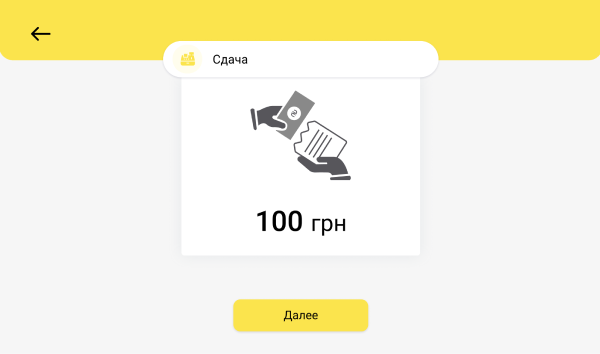
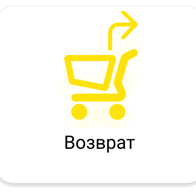
Ни для кого не секрет, что некоторые клиенты могут захотеть
вернуть приобрететнный товар.
Наша онлайн касса способна найти нужный чек в списке продаж по
номеру или дате, оформить возврат на сервере налоговой, а
также выдать чек о транзакции.
Даже если человек пришел без чека, у кассира будет возможность
найти его в истории продаж, который ограничен 14-ю днями, с
целью предотвращения ошибок.
Правильное заполнение этого раздела поможет кассирам в
дальнейшем быстро и безошибочно обслуживать ваших клиентов.
Каждому товару можно автоматически или вручную присвоить
штрих-код и артикул.
Также для для разных видов бизнеса можно использовать
различные комбинации НДС и акцизов, а при введении закупочной
цены, программа еще и сама посчитает вашу прибыль.
Кроме этого можно создавать групы товаров, чтобы потом было их
проще и быстрее искать при оформлении продажи.
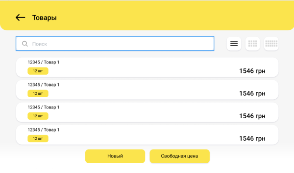
Открытие смены, внесение денег, изъятие наличных, Х-отчет,
Z-отчет - теперь это функции, которые доступны нажатием одной
кнопки на экране.
Кассовая дисциплина является требованиям законодательства.
Благодаря фнкционалу ПРРО Касса24 вашим сотрудникам станет
легче во всем этом разобраться.
Товарные остатки, движение товаров, отчет о закупках, отчет о
продажах - все это теперь доступно вашему администратору прямо
но Терминале Kassa24.
Для собственника бизнеса эта информация, а также много другое
достпно 24/7 через Онлайн кабинет.
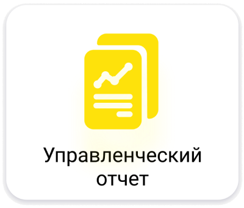
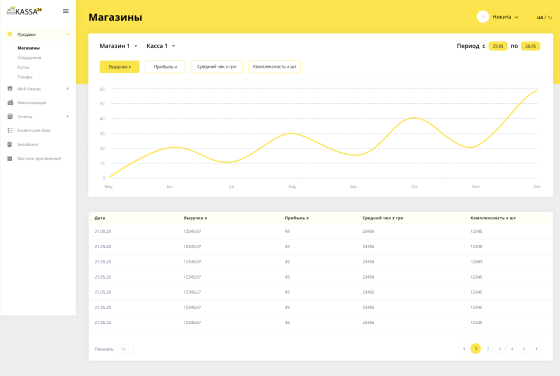
Где бы вы не находились, теперь оперативная информация о
состоянии вашего бизнеса доступна в любое время.
Вы можете зайти с телефона или компьютера в ваш личный кабинет
и проанализировать десятки доступных параметров, которые
отображают реальную ситуацию ваших продаж.
Весь функционал программы Kassa24 как для кассира,
администратора или собственника в его онлайн кабинете,
доступен на двух языках: украинском и русском.
Также вы можете отдельно менять язык печатных форм и тогда
ваши клиенты будут получать чеки или смотреть на этикетки на
удобном для них языке. Нужно только ввести названия товаров на
предпочитаемом языке.